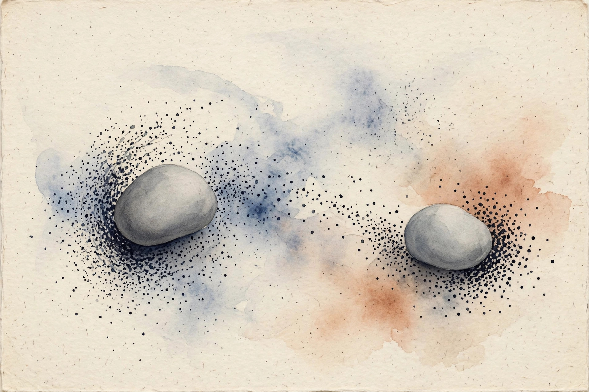

Companion · narrated from the lesson document
You have n unlabeled points and want k groups. No labels, no loss. What do you even optimize? This companion walks the full arc of Unit 10: k-means as hard assignment plus coordinate descent, the distortion and its local minima, EM for mixtures of Gaussians, and the ELBO proof that guessing labels climbs the likelihood.
From the lesson The idea, and every number beside it, comes from the cited section of lesson-10-clustering-em.md. The phrasing is the companion's.
Illustration Invented by the companion: an analogy, a toy with made-up values, or a what-if. Never lecture content.
companion Companion voice: the idea above the tag is from the lesson. The generalization below it is the companion's.
Provenance: no lecture transcript exists for this unit, and no lecture video is named in the lesson. The lesson's Source mapping states that SRC-01 chapters 10 and 11 (PDF pages 147 to 162) were read in substantial part on 2026-10-06. k-means++ is standard material beyond the notes and is labeled as such. Leaf rows carry SOURCE ATTRIBUTION PENDING until the RUN 6 pass.

Section 1 · SL-01 · C01, C02, C03
From the lessonSL-01 §Source anchor, §Mental model
Two kinds of unknowns: who belongs where (assignments c(i)), and where the centers are (centroids μⱼ). Fix one, the other is trivial: given centers, assign each point to the nearest. Given assignments, the best center is the mean. Alternate. The algorithm: initialize μⱼ (random training examples is the notes' suggestion), repeat until convergence: c(i) := argminⱼ ||xⁱ − μⱼ||², then μⱼ := mean of the points assigned to it.
From the lessonSL-01 §Initialization, §Correctness checks
Random centroids can start far from any data or collide. k-means++ (standard, beyond the notes): pick the first centroid uniformly, then each next with probability proportional to squared distance from the nearest existing centroid. It spreads the seeds and comes with an approximation guarantee. Empty clusters: if no point is assigned to μⱼ, reinitialize it (for example to a random point) or drop it. Handle the division by zero. The assignment step never increases the distortion: each point moves to its nearest center.
Illustration A real k-means on invented 2-D blobs. The data are made up for the toy, but the algorithm is the lesson's: alternate assignment and mean update, log J each iteration. Pick a seed and watch.
The lesson's claim to check: J is monotone non-increasing within each run, but the final J can differ across seeds.
From the lessonSL-01 §Failure case
Different seeds give different clusterings. A single run's answer is not "the" clustering. Run several seeds and keep the lowest distortion.
Two unknowns, one rule: fix one, the other is trivial. Alternate.
Section 2 · SL-02 · C01, C04, C12
From the lessonSL-02 §Source anchor, §The convergence argument
Distortion J(c, μ) = Σᵢ ||xⁱ − μ_{c(i)}||². k-means is coordinate descent on J: each step minimizes J over c with μ fixed, then over μ with c fixed. Each of the two steps can only decrease, never increase, J. J is bounded below by 0. So J converges. The subtlety: J converges, not the parameters. And it converges to a local minimum, not the global one. The notes' guarantee is "in a certain sense" (page 148): monotone J, finite termination, finitely many assignments.
| Two Gaussians, n = 200, k = 2 Illustration | J |
|---|---|
| Initial | 7.96 |
| Converged, 4 iterations, monotone | 0.98 |
| k = 3 (lower J) | below 0.98 |
From the lessonSL-02 §The cluster assumption, §Choosing k
k-means bakes in a belief: clusters are convex blobs of similar size, separable by Euclidean distance. The distortion is the operational form of that belief. When the belief is wrong (rings, moons, very different sizes), the optimum of J is the wrong answer. Choosing k: the notes do not prescribe a method. Standard practice: the elbow method (plot J vs k, look for the kink), silhouette scores, or domain knowledge. The honest statement: k is a modeling choice, not a learned parameter, in basic k-means.
From the lessonSL-02 §Failure case, §Correctness checks
Reading the elbow where there is none: on uniform noise J falls smoothly with k and every elbow is imaginary. k above n is meaningless. k = n gives J = 0 and says nothing.
J converges, not the parameters. And it converges to a local minimum, not the global one.
Lower J does not mean truer clusters. With k = 3 the distortion falls and a real cluster splits.
Section 3 · SL-03 · C05, C06, C07, C10, C11
From the lessonSL-03 §Source anchor, §Mental model
Model: zⁱ ∼ Multinomial(φ), xⁱ|zⁱ=j ∼ N(μⱼ, Σⱼ). The log likelihood has a sum inside the log, so setting derivatives to zero gives no closed form. If z were known, MLE would be easy: counts, means, covariances, exactly like GDA in U04. The motivating question: the likelihood has a sum inside the log, so no closed-form MLE. But if someone told you the cluster labels, estimation would be trivial. What if you guess the labels, estimate, and repeat?
Latent variables zⁱ are the missing labels. E-step: given current parameters, compute soft guesses wⁱⱼ = p(zⁱ = j | xⁱ. φ, μ, Σ) by Bayes' rule. M-step: pretend the soft guesses are the labels and run the easy MLE: φⱼ = mean of wⱼ, μⱼ = weighted mean, Σⱼ = weighted covariance. The M-step formulas are identical to the known-z case with indicators replaced by responsibilities (notes page 152).
Illustration The responsibility machine. The lesson's 1-D example: two Gaussians with means −1.97 and 2.03, unit variance, equal mixing weights. Type an x and the toy returns the responsibilities wⱼ = p(z = j | x).
x:
Try x = 0 (maximally uncertain) and x = −2 (hardly uncertain). Responsibilities sum to 1 over j.
From the lessonSL-03 §k-means as a limit, §Computed example
Let all Σⱼ = σ²I with σ → 0. The posteriors harden to 0/1: each point assigned to the nearest mean. EM becomes k-means. Soft contains hard as a special case. The computed example: two 1-D Gaussians, means −2 and 2, n = 300. EM from a bad start (means 0, 0.5): log likelihood rises from −812 to −654 over 25 iterations, means converge to −1.97 and 2.03. k-means on the same data: 94 percent agreement with the true labels. EM: 97 percent.
From the lessonSL-03 §Failure case
Singular collapse: one Gaussian shrinks onto a single point and the likelihood explodes to infinity. The "monotone improvement" then improves toward a degenerate answer. Constrain or regularize covariances.
Soft contains hard. Let σ → 0 and EM's posteriors harden into k-means' assignments.
Section 4 · SL-04 · C08, C09, C10
From the lessonSL-04 §Source anchor, §Mental model
Jensen's inequality: E[f(X)] ≥ f(E[X]) for convex f. The log of a sum is hard. Jensen builds a lower bound (the ELBO) that touches the true likelihood at the current parameters: the E-step chooses the posterior Q, which makes the bound tight. Maximizing the bound (M-step) pushes the true likelihood up because the bound touches it. Touch, push, repeat.
From the lessonSL-04 §The proof
l(θ) = Σᵢ log Σ_z p(xⁱ, z) under parameters θ. For any Q: l ≥ Σᵢ E_Q[log p(x, z)/Q(z)] (Jensen, log is concave). The E-step picks Qᵢ = p(z|xⁱ. θ⁽ᵗ⁾), giving equality at θ⁽ᵗ⁾. The M-step picks θ⁽ᵗ⁺¹⁾ maximizing the bound, so l(θ⁽ᵗ⁺¹⁾) ≥ bound(θ⁽ᵗ⁺¹⁾) ≥ bound(θ⁽ᵗ⁾) = l(θ⁽ᵗ⁾). Monotone ascent (notes page 160).
From the lessonSL-04 §What it does not prove, §Failure case
Monotone ascent to a local maximum, not the global one. EM inherits k-means' seed sensitivity. Multiple restarts remain the practice. Stopping on parameter change instead of likelihood change: near a flat optimum parameters crawl after the likelihood converged. Monitor the likelihood.
Touch, push, repeat. The E-step makes the bound tight, the M-step pushes the bound, and the true likelihood rises with it.
Section 5 · Synthesis
From the lessonSL-01 to SL-04
The arc, end to end. With no labels, you still optimize: the distortion J(c, μ) = Σᵢ ||xⁱ − μ_{c(i)}||², and k-means is coordinate descent on it, alternating nearest assignment with mean update (SL-01). J is monotone non-increasing and bounded below by 0, so J converges: to a local minimum, not the global one, with the parameters possibly still moving. Lower J does not mean truer clusters, and k stays a modeling choice (SL-02).
Latent labels turn the hard problem soft: EM guesses responsibilities by Bayes' rule, then runs the known-z MLE with indicators replaced by responsibilities (SL-03). At σ → 0 the soft posteriors harden into k-means. The guarantee: Jensen's bound touches the likelihood at the current parameters, the M-step pushes the bound, and the likelihood rises with it, monotonically, to a local maximum (SL-04). Both algorithms inherit seed sensitivity. Both want restarts.
From the lesson§Research reading, §Role bridges
Where the unit points next, in the lesson's own forward links. The extension: compare hard and soft assignments as the component overlap grows. The falsifiable claim: EM's advantage over k-means grows with overlap. The ELBO derivation is the foundation for VI, VAEs, and diffusion (U11-U12). For the ML engineer: k-means with restarts is the baseline segmentation tool, and EM fits probabilistic mixtures when soft assignment matters. Report seed sensitivity honestly.
Wisdom index
Each nugget states the idea in plain words, why it matters, and the transferable principle. Every one is anchored to its lesson section.